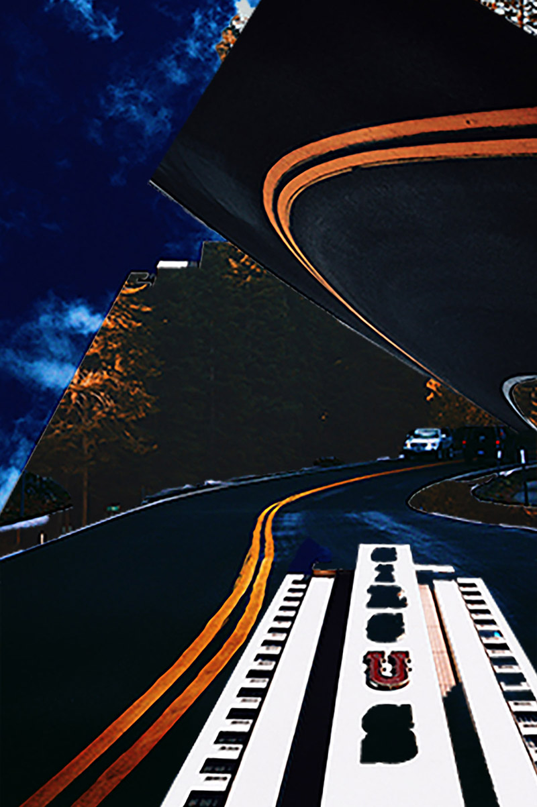

Untitled (image), VSCO & Adobe Photoshop, 2018
Image taken in San Francisco on a foggy day. Edited to represent a recently discovered planet.
Circus Weekend, Adobe Photoshop, 2018
The wists and turns of life bring unexpected and life-altering decisions and events, etching themselves eternally in memory.

Born From Nothing, Audacity & VSCO, 2018
Where we come from and why we are here, ultimately, guides (if not controls) my life. The only way to channel some control is to represent the "simulation" aspect of life.